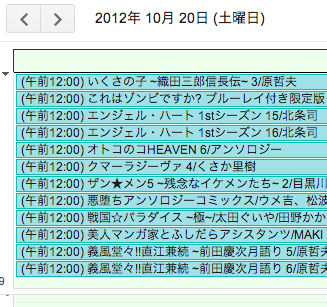
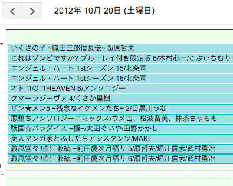

Your browser doesn't support the features required by impress.js, so you are presented with a simplified version of this presentation.
For the best experience please use the latest Chrome or Safari browser. Firefox 10 (to be released soon) will also handle it.
PerlでiCalendarを出力してみた
こばやし けんいち
自己紹介
- こばやし けんいち
- Twitter: @Niratama
- 携帯サイトやソーシャルゲームでごはん食べてます
iCalendarとは
- RFC 5545で規定された、スケジュールの標準フォーマット
- Googleカレンダーにインポートするときに使える←今回の目的
今回の目的
- コミック新刊ラインアップのデータをGoogleカレンダーに載せたい
- 人間が読むことが前提のテキストファイル
- １ヶ月分のデータが３つのファイルに分割されている
- 文字コードはEUC(ただしCP51932)
Data::ICalの使用例
use Data::ICal;
use Data::ICal::Entry::Event;
my $cal = Data::ICal->new;
my $ev = Data::ICal::Entry::Event->new;
$ev->add_properties(
summary => 'Chiba.pm #1',
dtstart => '20121020',
dtend => '20121021',
description => 'at funabashi, chiba',
);
$cal->add_entry($ev);
print $cal->as_string;
iCalendarの出力例
BEGIN:VCALENDAR
PRODID:Data::ICal 0.18
VERSION:2.0
BEGIN:VEVENT
DESCRIPTION:at funabashi\, chiba
DTEND:20121021
DTSTART:20121020
SUMMARY:Chiba.pm #1
END:VEVENT
END:VCALENDAR
日付の扱い(2)
- 全日イベントとしてGoogleカレンダーに登録したかった
- DTSTARTやDTENDに時刻が入っていると、全日イベント扱いにはなるものの、イベントに時刻が表示されてしまう。
- Date::ICalもData::ICal::DateTimeも「日時」でしか出力できなかった。

日付の扱い(3)
- 結局、Time::Piece->strftimeでDATE型を直接文字列として出力するようにした。

まとめ
- Data::ICalはわりと素直
- iCalendarの仕様に軽く目を通しておいたほうが使いやすい
- プロパティの名前がiCalendarそのままなので
- DATE-TIME型でなくてDATE型を扱う場合は今のところ適切なモジュールはなさそう